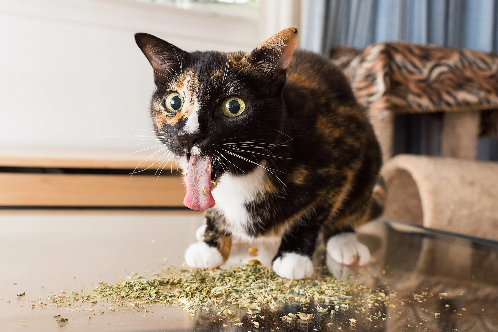

5 Suprising Health Benefits Of Catnip
Posted on
-
Stress-Busting Superhero: Catnip's Nepetalactone Magic 🧘
Let's get serious; life as a cat can be tough. That's where catnip steps in, my friends. The nepetalactone in this herb is like the cool uncle who hands you a beer after a hard day. It triggers a "Zen mode," wiping stress off the slate. It's medicinal, not just recreational.
-
Cardiovascular Coolness: Catnip's Fitness Guru Status 💪
I might not be hitting the gym anytime soon, but catnip? It's my personal trainer. It turns a lazy afternoon into a cardio bonanza. Jumping, rolling, flipping—call it whatever; it's my workout routine. Catnip: the fitness guru for felines too fabulous for a treadmill.
-
Dental Delight: Catnip Leaves for a Gleaming Grin 😬
Who needs a dentist when you've got catnip? Chewing on those leaves is like a DIY dental spa day. Keeps my pearly whites gleaming, and I don't need anyone poking around in my mouth. Catnip leaves: the toothbrush of champions.
-
Gut Health 101: Catnip Edition for Happy Digestion 🍽️
After a gourmet feast, sometimes I feel the consequences. Catnip is my go-to digestive aid. It's like Tums but for cool cats. No more belly grumbles—I'm too busy being a culinary critic to deal with indigestion.
-
Catnip-Induced Siestas: Dreamland Edition for Quality Napping 😴
After a day of cat shenanigans, I need a solid nap. Catnip ensures those naps are epic. It's the Sandman's secret weapon, guaranteeing I chase dream mice through fields of... well, more catnip. A nap so good, even insomniac cats envy it.
Hey, Cool Cats! Joseph here, your resident white fluffball, with some real talk about catnip. Forget the fluff—let's dive into the gritty details of the surprisingly legit health benefits that even I, Joseph, find worth sharing.
Conclusion:
So, my fierce feline companions, catnip isn't just a sideshow—it's a backstage pass to the VIP lounge of health perks. From stress relief to dental hygiene, catnip's got our backs. Embrace the dark side of the herb, and let's keep rocking these nine lives.
Joseph 🌑🐾